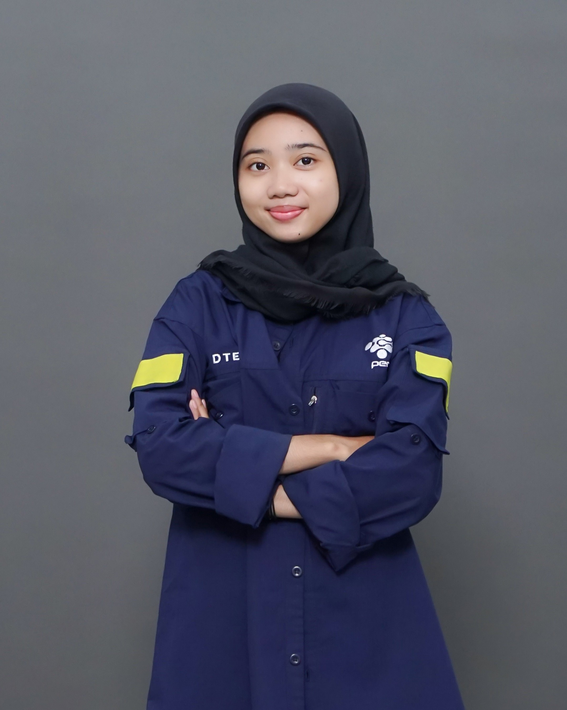
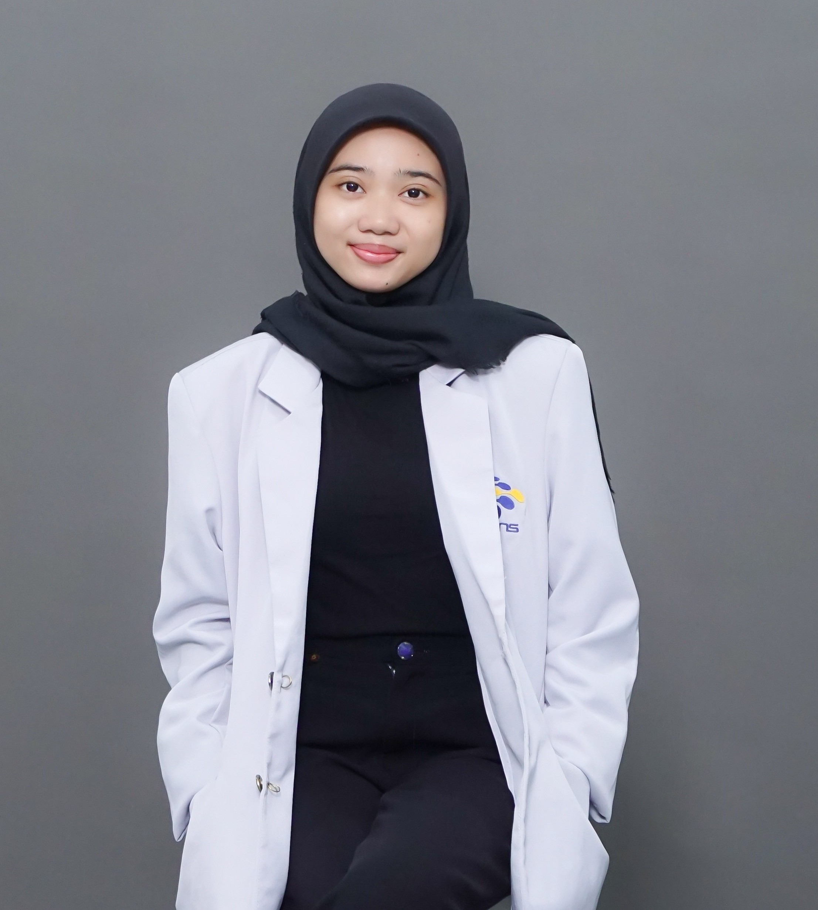

Sponsor Intake Website
Website untuk mengumpulkan informasi dan kebutuhan calon sponsor sebelum proses tindak lanjut.
WEB DEVELOPER · FRESH GRADUATE
Halo, saya Ika Shafira Salwadilla, fresh graduate D4 Teknologi Rekayasa Internet dari Politeknik Elektronika Negeri Surabaya.
Saya memiliki pengalaman satu tahun sebagai Web Developer Intern dan tertarik pada pengembangan aplikasi web, database, API, serta teknologi IoT.

01
TENTANG SAYA
Selama menempuh pendidikan di Teknologi Rekayasa Internet, saya mempelajari pengembangan aplikasi web, database, Internet of Things, API, serta implementasi sistem berbasis perangkat keras dan perangkat lunak.
Saya juga mendapatkan pengalaman profesional selama satu tahun sebagai Web Developer Intern di PT Telkomsel Branch Surabaya. Selama magang, saya terlibat dalam pengembangan dan maintenance beberapa aplikasi berbasis web, termasuk penyesuaian fitur, database, testing, dan perbaikan bug.
02
KEAHLIAN
Teknologi yang saya gunakan selama kuliah, project, dan pengalaman magang.
03
PENGALAMAN
2024 — 2025
1 YEAR
PT Telkomsel · Branch Surabaya
Terlibat dalam pengembangan dan maintenance aplikasi berbasis web untuk kebutuhan internal dan bisnis.
Website untuk mengumpulkan informasi dan kebutuhan calon sponsor sebelum proses tindak lanjut.
Website untuk membantu proses pemesanan perjalanan dinas pegawai melalui sistem internal.
Maintenance dan penyesuaian fitur aplikasi, pengelolaan database, testing, serta perbaikan bug.
04
PROYEK
Project kuliah, project pribadi, dan pengalaman pengembangan selama magang.
 01
01
FINAL PROJECT · IoT · WEB
Sistem penerimaan paket otomatis berbasis IoT dengan autentikasi QR Code dan face recognition.
Lihat detail proyek →
02WEB DEVELOPMENT
Aplikasi web untuk pencatatan tamu pada acara PialaByU dengan penyimpanan data dan dashboard.
Lihat detail proyek → 03
03
INTERNSHIP · WEB DEVELOPMENT
Website untuk membantu proses pemesanan tiket perjalanan dinas pegawai melalui sistem internal.
Lihat detail proyek →Lebih banyak project akan ditambahkan.
05
PENDIDIKAN
POLITEKNIK ELEKTRONIKA NEGERI SURABAYA
IPK 3.65 / 4.00
FINAL PROJECT
06
SERTIFIKASI & PENCAPAIAN
SERTIFIKASI KOMPETENSI
BNSP · Sertifikasi Kompetensi TIK
FINAL PROJECT COMPETITION
Presentasi dan pameran hasil proyek akhir.
LANGUAGE
Listening Test
07
ORGANISASI & KEGIATAN
LMB PENS
Mengelola hubungan eksternal dan koordinasi dengan organisasi mahasiswa serta UKM di lingkungan PENS.
LMB PENS
Mendukung kegiatan dan hubungan eksternal organisasi.
IONIC & TRI Expo
Terlibat dalam pengelolaan kebutuhan keuangan dan operasional kegiatan.
PENS
Terlibat dalam berbagai kegiatan kampus seperti PKP PKM, KMIPN, dan PENSCOMP.
08
KONTAK
Terbuka untuk kesempatan kerja, kolaborasi, maupun project yang berkaitan dengan web development.